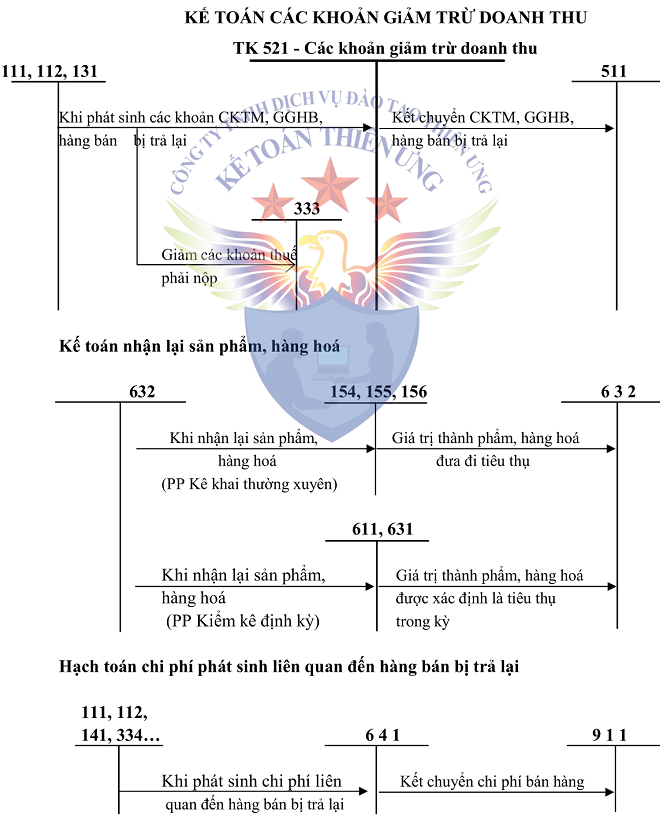

Hướng dẫn cách hạch toán các khoản giảm trừ doanh thu - Tài khoản 521 như: Hạch toán chiết khấu thương mại, giảm giá hàng bán, hàng bán bị trả lại theo Thông tư 99.
Chú ý: Tài khoản 521 - Các khoản giảm trừ doanh thu chỉ hạch toán khi DN bạn sử dụng Chế độ kế toán theo Thông tư 99.
- Nếu DN bạn sử dụng Chế độ kế toán theo Thông tư 133 thì không có Tài khoản 521. Các bạn hạch toán qua Tài khoản 511. Xem thêm: Cách hạch toán tài khoản 511
1. Tài khoản 521 - Các khoản giảm trừ doanh thu
a) Tài khoản này dùng để phản ánh các khoản được điều chỉnh giảm trừ vào doanh thu bán hàng, cung cấp dịch vụ phát sinh trong kỳ, gồm: Chiết khấu thương mại, giảm giá hàng bán và hàng bán bị trả lại. Tài khoản này không phản ánh các khoản thuế được giảm trừ vào doanh thu như thuế GTGT đầu ra phải nộp tính theo phương pháp trực tiếp.
b) Việc điều chỉnh giảm doanh thu được thực hiện như sau:
- Khoản chiết khấu thương mại, giảm giá hàng bán, hàng bán bị trả lại phát sinh cùng kỳ tiêu thụ sản phẩm, hàng hóa dịch vụ được điều chỉnh giảm doanh thu của kỳ phát sinh;
- Trường hợp sản phẩm, hàng hoá, dịch vụ đã tiêu thụ từ các kỳ trước, đến kỳ sau mới phát sinh chiết khấu thương mại, giảm giá hàng bán hoặc hàng bán bị trả lại thì doanh nghiệp được ghi giảm doanh thu theo nguyên tắc:
+ Nếu sản phẩm, hàng hoá, dịch vụ đã tiêu thụ từ các kỳ trước, đến kỳ sau phải giảm giá, phải chiết khấu thương mại, bị trả lại nhưng phát sinh trước thời điểm phát hành Báo cáo tài chính, kế toán phải coi đây là một sự kiện cần điều chỉnh phát sinh sau ngày lập Bảng cân đối kế toán và ghi giảm doanh thu, trên Báo cáo tài chính của kỳ lập báo cáo (kỳ trước).
+ Trường hợp sản phẩm, hàng hoá, dịch vụ phải giảm giá, phải chiết khấu thương mại, bị trả lại sau thời điểm phát hành Báo cáo tài chính thì doanh nghiệp ghi giảm doanh thu của kỳ phát sinh (kỳ sau).
c) Chiết khấu thương mại phải trả là khoản doanh nghiệp bán giảm giá niêm yết cho khách hàng mua hàng với khối lượng lớn. Bên bán hàng thực hiện kế toán chiết khấu thương mại theo những nguyên tắc sau:
- Trường hợp trong hóa đơn GTGT hoặc hóa đơn bán hàng đã thể hiện khoản chiết khấu thương mại cho người mua là khoản giảm trừ vào số tiền người mua phải thanh toán (giá bán phản ánh trên hoá đơn là giá đã trừ chiết khấu thương mại) thì doanh nghiệp (bên bán hàng) không sử dụng tài khoản này, doanh thu bán hàng phản ánh theo giá đã trừ chiết khấu thương mại (doanh thu thuần).
- Kế toán phải theo dõi riêng khoản chiết khấu thương mại mà doanh nghiệp chi trả cho người mua nhưng chưa được phản ánh là khoản giảm trừ số tiền phải thanh toán trên hóa đơn. Trường hợp này, bên bán ghi nhận doanh thu ban đầu theo giá chưa trừ chiết khấu thương mại (doanh thu gộp). Khoản chiết khấu thương mại cần phải theo dõi riêng trên tài khoản này thường phát sinh trong các trường hợp như:
+ Số chiết khấu thương mại người mua được hưởng lớn hơn số tiền bán hàng được ghi trên hoá đơn lần cuối cùng. Trường hợp này có thể phát sinh do người mua hàng nhiều lần mới đạt được lượng hàng mua được hưởng chiết khấu và khoản chiết khấu thương mại chỉ được xác định trong lần mua cuối cùng;
+ Các nhà sản xuất cuối kỳ mới xác định được số lượng hàng mà nhà phân phối (như các siêu thị) đã tiêu thụ và từ đó mới có căn cứ để xác định được số chiết khấu thương mại phải trả dựa trên doanh số bán hoặc số lượng sản phẩm đã tiêu thụ.
d) Giảm giá hàng bán là khoản giảm trừ cho người mua do sản phẩm, hàng hoá kém, mất phẩm chất hay không đúng quy cách theo quy định trong hợp đồng kinh tế. Bên bán hàng thực hiện kế toán giảm giá hàng bán theo những nguyên tắc sau:
- Trường hợp trong hóa đơn GTGT hoặc hóa đơn bán hàng đã thể hiện khoản giảm giá hàng bán cho người mua là khoản giảm trừ vào số tiền người mua phải thanh toán (giá bán phản ánh trên hoá đơn là giá đã giảm) thì doanh nghiệp (bên bán hàng) không sử dụng tài khoản này, doanh thu bán hàng phản ánh theo giá đã giảm (doanh thu thuần).
- Chỉ phản ánh vào tài khoản này các khoản giảm trừ do việc chấp thuận giảm giá sau khi đã bán hàng (đã ghi nhận doanh thu) và phát hành hoá đơn (giảm giá ngoài hoá đơn) do hàng bán kém, mất phẩm chất...
đ) Đối với hàng bán bị trả lại, tài khoản này dùng để phản ánh giá trị của số sản phẩm, hàng hóa bị khách hàng trả lại do các nguyên nhân: Vi phạm cam kết, vi phạm hợp đồng kinh tế, hàng bị kém, mất phẩm chất, không đúng chủng loại, quy cách.
e) Kế toán phải theo dõi chi tiết chiết khấu thương mại, giảm giá hàng bán, hàng bán bị trả lại cho từng khách hàng và từng loại hàng bán, như: bán hàng (sản phẩm, hàng hoá), cung cấp dịch vụ. Cuối kỳ, kết chuyển toàn bộ sang tài khoản 511 - "Doanh thu bán hàng và cung cấp dịch vụ" để xác định doanh thu thuần của khối lượng sản phẩm, hàng hoá, dịch vụ thực tế thực hiện trong kỳ báo cáo.
SƠ ĐỒ HẠCH TOÁN TÀI KHOẢN 521

2. Kết cấu và nội dung tài khoản 521 - Các khoản giảm trừ doanh thu
|
Bên Nợ |
Bên Có |
|
- Khoản chiết khấu thương mại đã chấp nhận thanh toán cho khách hàng; - Khoản giảm giá hàng bán đã chấp thuận cho người mua hàng; - Doanh thu của hàng bán bị trả lại, đã trả lại tiền cho người mua hoặc tính trừ vào khoản phải thu khách hàng về số sản phẩm, hàng hóa đã bán |
Tại thời điểm kết thúc kỳ kế toán, kết chuyển toàn bộ số chiết khấu thương mại, giảm giá hàng bán, doanh thu của hàng bán bị trả lại sang tài khoản 511 “Doanh thu bán hàng và cung cấp dịch vụ” để xác định doanh thu thuần của kỳ báo cáo. |
| Tài khoản 521 - Các khoản giảm trừ doanh thu không có số dư cuối kỳ. | |
Với thông tư 99 - Tài khoản 521 không có tài khoản cấp 2 (như thông tư 200 trước đó)
=>>> Doanh nghiệp có thể mở thêm các tài khoản chi tiết các khoản giảm trừ doanh thu phát sinh (như: Chiết khấu thương mại, Giảm giá hàng bán, Hàng bán bị trả lại...) cho phù hợp với đặc điểm hoạt động sản xuất, kinh doanh và yêu cầu quản lý của đơn vị mình.3. Cách hạch toán các khoản giảm trừ doanh thu ở một số trường hợp như sau:
|
a) Phản ánh số chiết khấu thương mại, giảm giá hàng bán thực tế phát sinh trong kỳ, ghi: - Trường hợp sản phẩm, hàng hoá đã bán phải giảm giá, chiết khấu thương mại cho người mua thuộc đối tượng chịu thuế GTGT tính theo phương pháp khấu trừ, và doanh nghiệp tính thuế GTGT theo phương pháp khấu trừ, ghi: Nợ TK 521 - Các khoản giảm trừ doanh thu Nợ TK 3331 - Thuế GTGT phải nộp (thuế GTGT đầu ra được giảm) Có các TK 111, 112, 131, ... - Trường hợp sản phẩm, hàng hoá đã bán phải giảm giá, chiết khấu thương mại cho người mua không thuộc đối tượng chịu thuế GTGT hoặc thuộc đối tượng chịu thuế GTGT tính theo phương pháp trực tiếp thì khoản giảm giá hàng bán cho người mua, ghi: Nợ TK 521 - Các khoản giảm trừ doanh thu Có các TK 111, 112, 131, ... Xem thêm: Cách viết hóa đơn chiết khấu thương mại |
|
|
b) Kế toán hàng bán bị trả lại - Khi doanh nghiệp nhận lại sản phẩm, hàng hóa bị trả lại, kế toán phản ánh giá vốn của hàng bán bị trả lại: Nợ TK 154 - Chi phí sản xuất, kinh doanh dở dang Nợ TK 155 - Thành phẩm Nợ TK 156 - Hàng hóa Có TK 632 - Giá vốn hàng bán. - Thanh toán với người mua hàng về doanh thu của hàng bán bị trả lại: Nợ TK 521 - Các khoản giảm trừ doanh thu Nợ TK 3331- Thuế GTGT phải nộp (33311) (nếu có) Có các TK 111, 112, 131,... - Các chi phí phát sinh liên quan đến hàng bán bị trả lại (nếu có), ghi: Nợ TK 641 - Chi phí bán hàng Có các TK 111, 112, 141, 334,... |
|
|
c) Cuối kỳ kế toán, kết chuyển tổng số giảm trừ doanh thu phát sinh trong kỳ sang tài khoản 511 - “Doanh thu bán hàng và cung cấp dịch vụ”, ghi: Nợ TK 511 - Doanh thu bán hàng và cung cấp dịch vụ Có TK 521 - Các khoản giảm trừ doanh thu. |
Kế toán Diệu Tâm chúc các bạn thành công! Công ty thường xuyên khai giảng các khóa học kế toán thực hành thực tế tại Hà Nội: Dạy hoàn thiện sổ sách, lập Báo cáo tài chính, Quyết toán thuế cuối năm trực tiếp trên chứng từ thực tế
----------------------------------------------